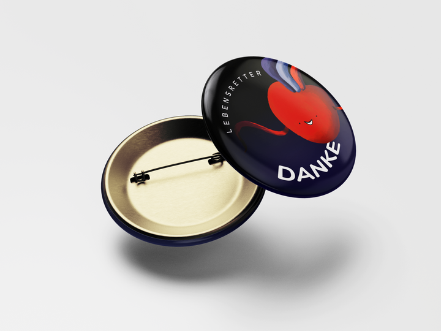
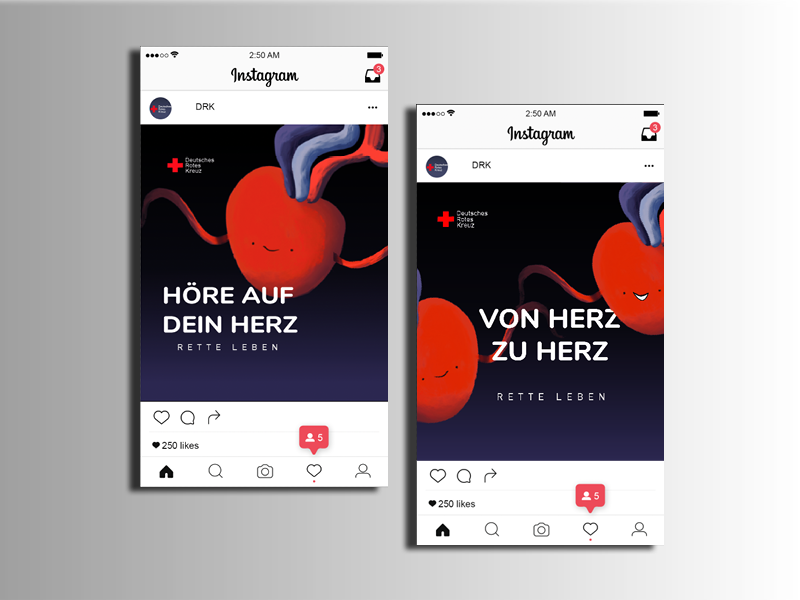
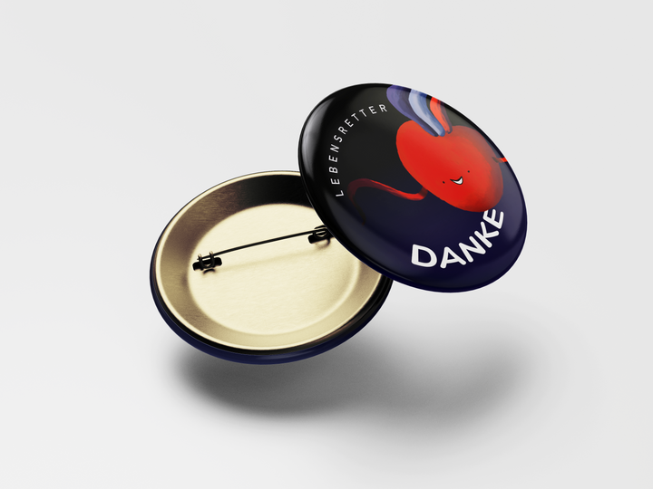
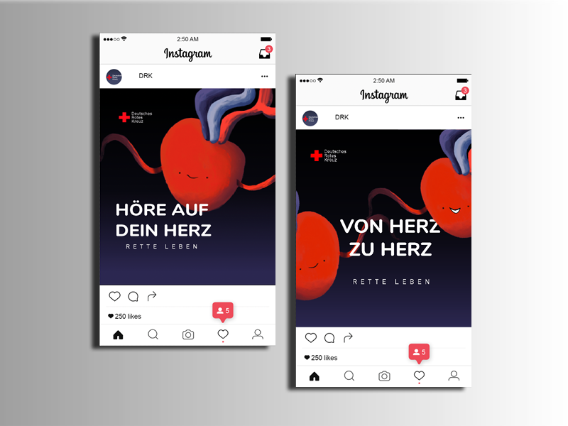

Blutspende Kampange
Die Aufgabe hier war, eine Kampange zur Blutspende zu gestalten. Die Blutspende hat eine weite Zielgruppe und viele wissen nicht wie wichtig die Blutspende ist. In meinem Konzept spielt das Herz als Charakter die Hauptrolle. Das Herz in uns ruft auf Blut zu spenden und damit Leben zu retten. Denn jeder hat ein Herz das Blut durch den Körper pumpt und uns am Leben erhält. Ich habe viel über Advertising gelernt. Die Werbemittel sind ein Storyboard Clip, Stadtplakate, Soziale Medien Posts und zusätzlich ein Redesign vom Blutspendeausweis und einem Dankeschön-Button als Belohnung und Motivation zum Blutspenden für andere.

 


